Guide towards installing and using the Mod builder
To make the mod files, only the Minecraft Mod Builder is needed, which can be downloaded from here.
To play the mods, the Minecraft game with Forge is necessary.
To install the Minecraft Builder Mod, you first need to install Minecraft. You then need to install Forge modloader aswell.
For a tutorial on installing forge, click here.
Install the Builder Mod via the regular Forge mod installation procedure, as seen here.
To open the editor, you run the editor executable. This brings up a mostly empty window. You then need to press 'File' and then 'New' in the upper left corner. After you have done this, a file dialog will be opened. Here, just type the name of your mod, for example 'My Mod', and press 'save'.
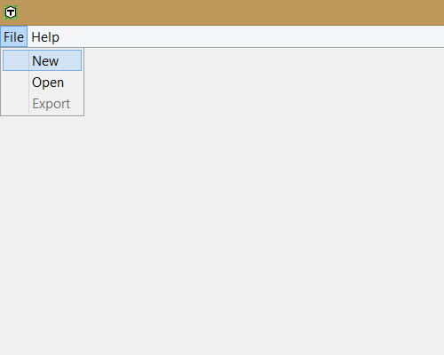 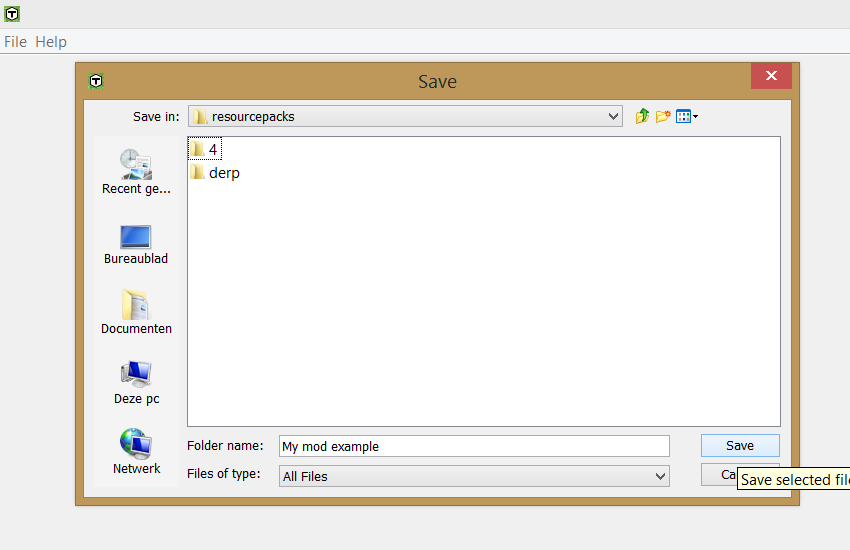When opening an existing mod, press 'file' then 'open'. You then simply click on the folder with the name of your mod, and then click open.
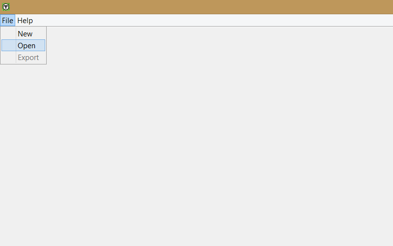 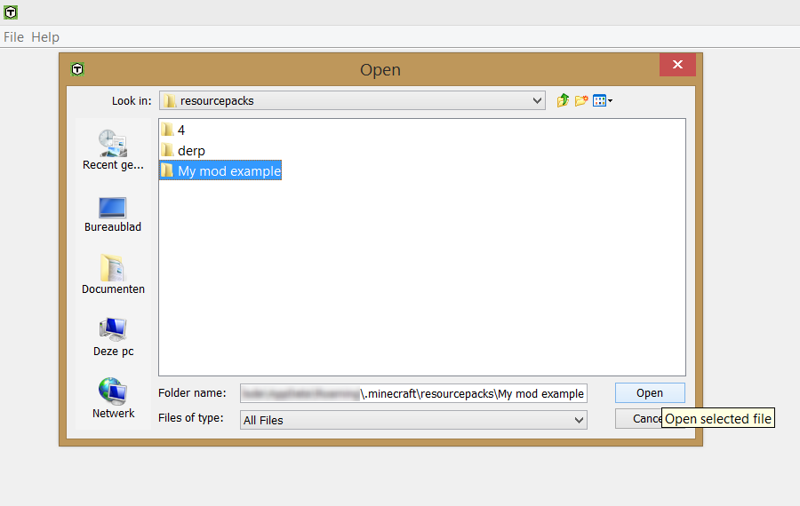In general, with the editor, if you do not know what a certain property does, it's best to leave it default. This is nearly always a good option.
To make a texture, you have two options. Either you make them yourself in the texture editor, or you import an image to be used as a texture. Keep in mind the that textures have a resolution of 16x16 in the editor, so importing larger images may produce unwanted results. We recommend sticking to 16x16 textures.
First select a colour, then paint the texture.
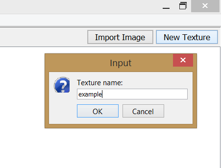 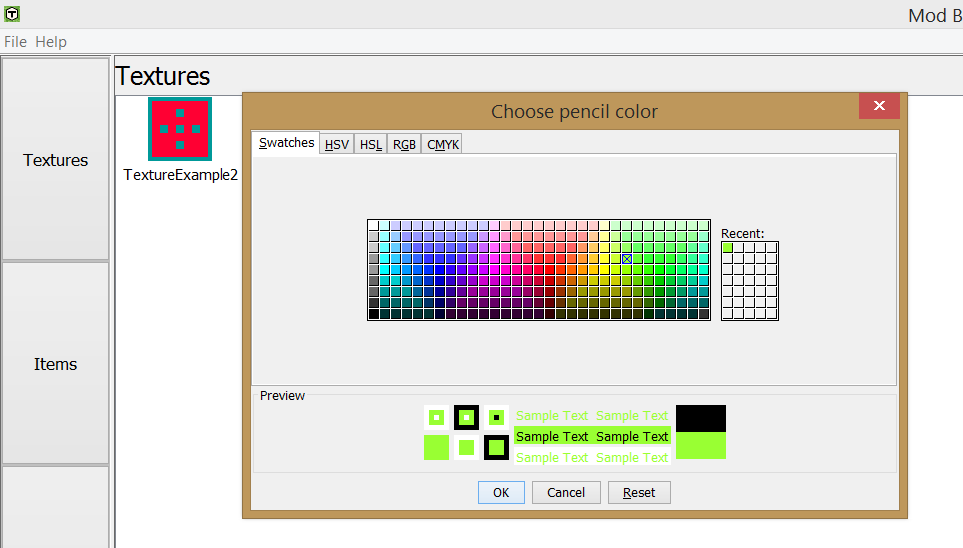First, click the 'Import Image' button. Then, navigate your files to find the texture you want to import. Once you found it, select it and hit open.
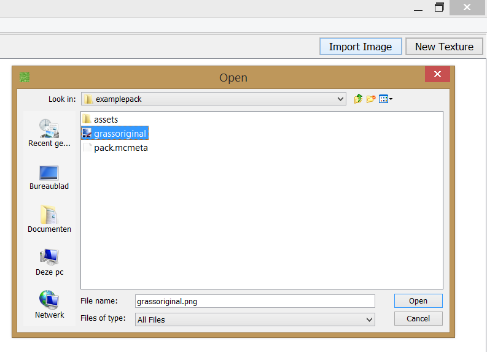 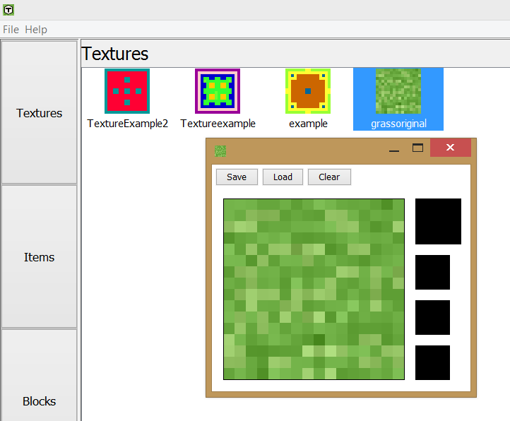To make an item in the editor, click the 'item' button on the left. Here you can choose between tools, food items or regular items. Each type has their own button in the top right corner.
For information about the properties, we suggest the Minecraft wiki. Other than that, filling most of the form with the desired properties is fairly straight forward.
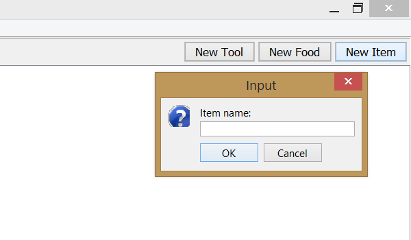 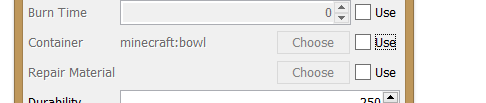The 'use' boxes, when selected, allow you to edit a property that is optional, when you deselect the box, for convenience, the value stays visible and remains in the editor. However, if you save when the box is not selected, the editor will ignore the value in the corresponding field.
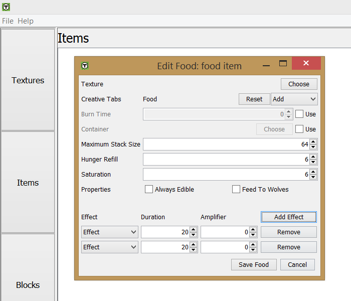The potion effects indicate what potion effects are given to the user when they eat the food item. To add a potion effect, click the 'Add Effect' button. Then you can set the effect you want by manipulating the fields that appeared.
first of all, you select the blocks tab, then 'New Block', enter a name, as usual, then make a block model, after that, you can change any desired values and press save!
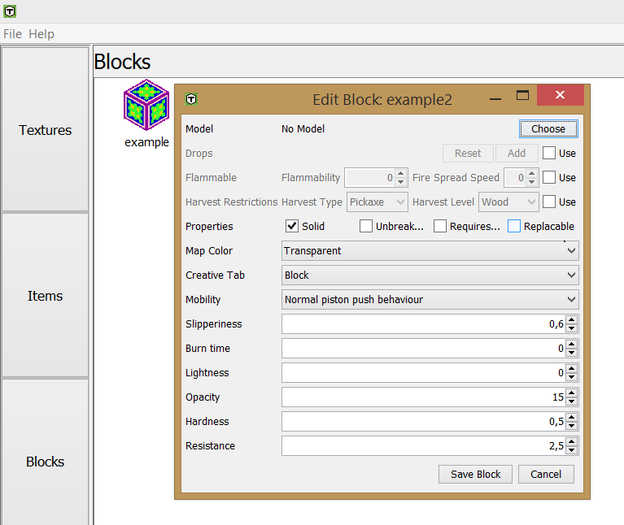 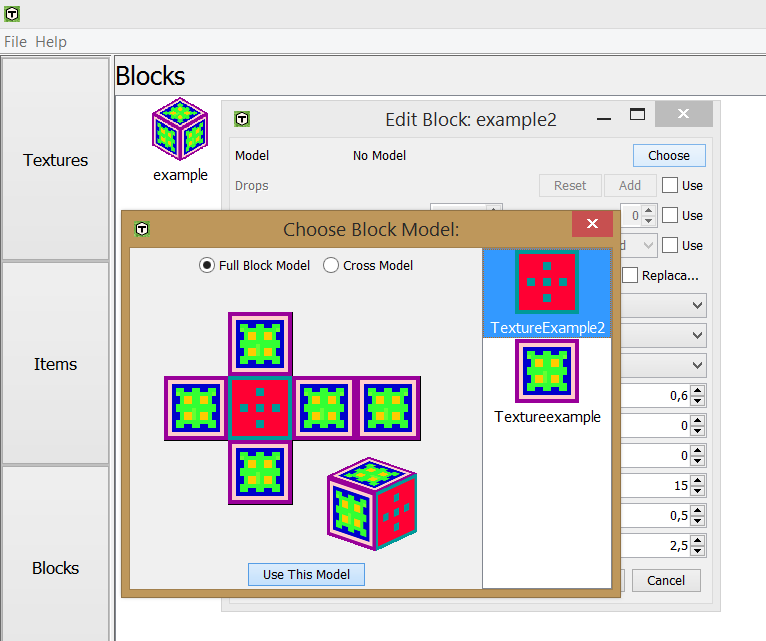There is three types of recipes, after clicking the button to access the recipe panel, there are three buttons in the top right corner. Shapeless recipes, when made, do not depend on the shape that they are made, similarly, a shaped recipe is required to be made in the specific shape you make them. Finally, smelting recipes are put in furnaces, add a fuel to smelt it and then the output is made.
After deciding what type of recipe you want to make, you can click on the corresponding button. You have to put in the intended name for the item, you can start editing it.
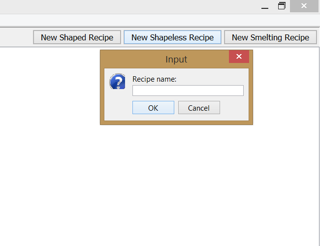 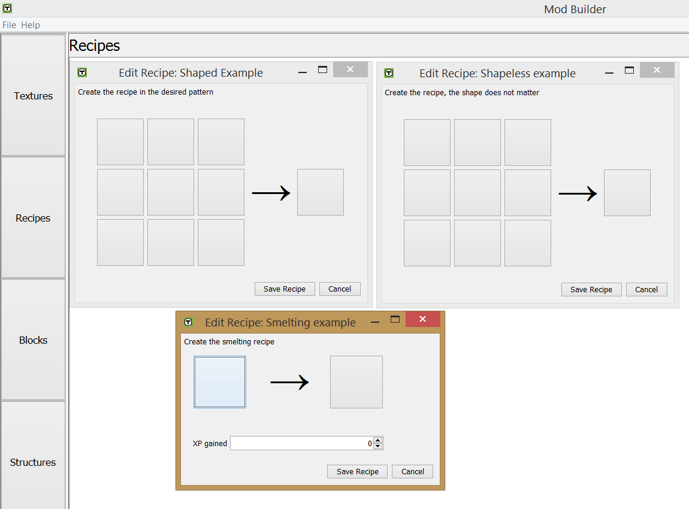When editing a recipe, simply click on one of the 'item slots' which are represented as buttons, to open a menu for selecting the item or block you want to use in crafting.
Note that when making a shapeless recipe, the shape of the recipe does not matter at all, just the items that are used as input.
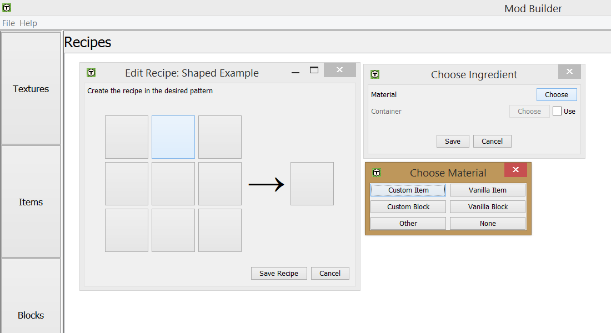 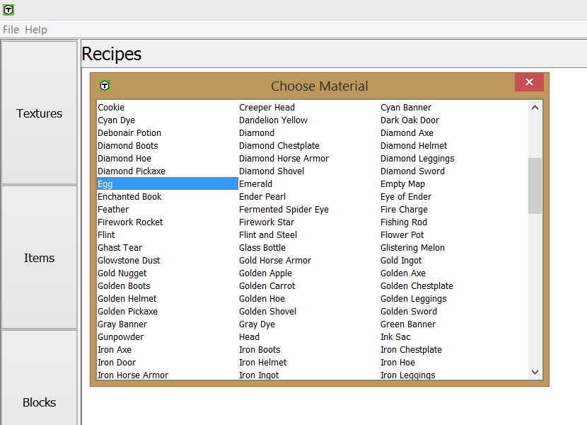When making structures, there are two choices in our editor, there is ground cover, which generates blocks over the default world top layer, which is useful for things like grass.
The other option is Ore generation, this inserts ore veins in specified layers in the ground for mining
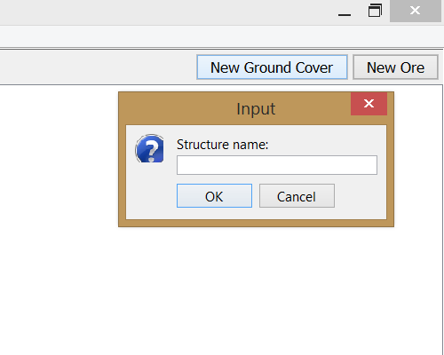 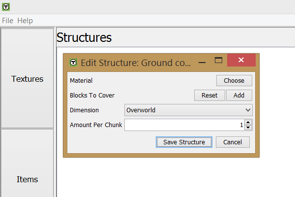Change the properties you want, replacing or the block to cover is telling the editor where the blocks should be generated, and the material is which block to place.
By default there are the vanilla items in the editor aswell as the blocks in the editor itself, however, if you want to use blocks outside of this, you can use the 'other' option, in this case, you give the Minecraft ID, in this example this is industrialcraft:blockElectricPump. This also allows you to access mods that arent made in the mod builder
To open the mod in Minecraft, you go to options, then resourcepacks. You hover your mouse over the mod you've made and click it so it enters the 'selected resource packs'. Then press 'Done' and wait untill it finishes loading
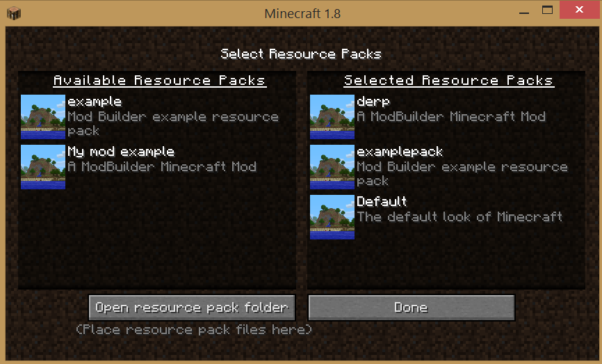 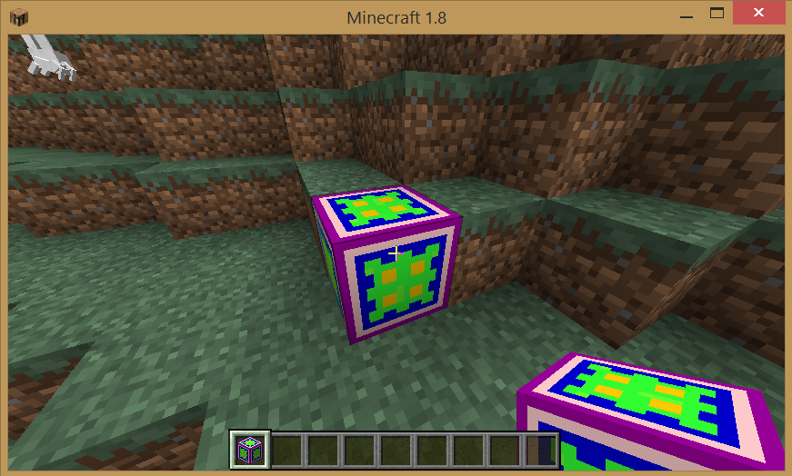After you have selected the mod, you have to restart Minecraft. Congratulations, you have now activated your mod! If you update it, it will automatically update the mod once you restart Minecraft.